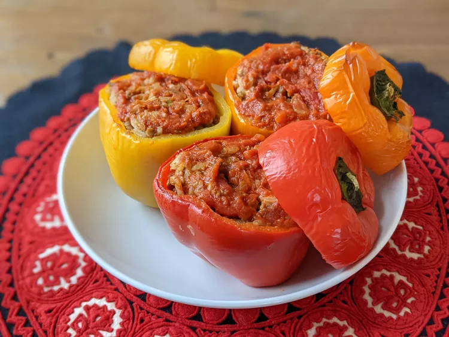
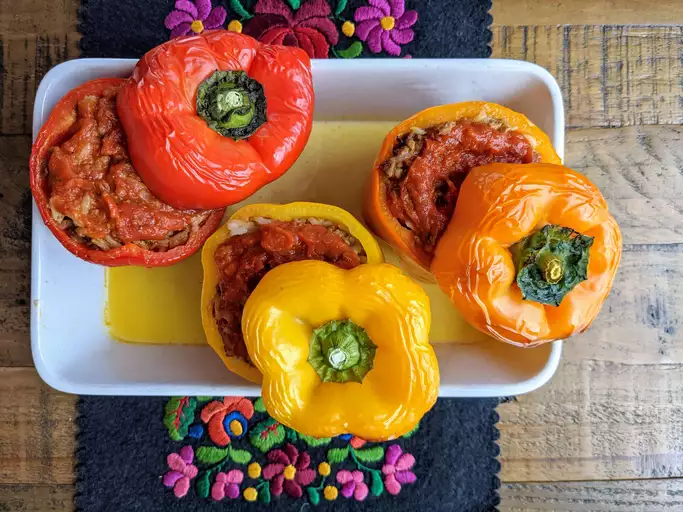

Pimientos rellenos

Descripcion
Porciones: 6
Tiempo de cocina:1 hora 30 minutos
Los pimientos rellenos con carne molida y arroz se cubren con una salsa de tomate sazonada.
Ingredientes
- 1 taza de agua fría
- ½ taza de arroz blanco de grano largo crudo
- 1 cucharada de aceite vegetal
- 1 libra de carne molida
- 6 pimientos verdes medianos
- 16 onzas de salsa de tomate, dividida
- 1 cucharada de salsa inglesa
- ¼ cucharadita de ajo en polvo
- ¼ cucharadita de cebolla en polvo
- sal y pimienta negra molida al gusto
- 1 cucharadita de condimento italiano
Preparacion
- Reúna todos los ingredientes y precaliente el horno a 350 grados F (175 grados C).
- Hierva el agua y el arroz en una cacerola tapada. Reduzca el fuego a bajo y cocine a fuego lento hasta que el arroz esté tierno, aproximadamente 20 minutos.
- Mientras tanto, calienta el aceite en una sartén a fuego medio. Agregue la carne molida y cocine hasta que esté uniformemente dorada y desmenuzable, de 7 a 9 minutos
- Ahueque los pimientos morrones quitando y desechando la parte superior, las semillas y las membranas. Corta la base de los pimientos si es necesario para asegurarte de que queden erguidos.
- Coloque los pimientos en una fuente para horno con los lados ahuecados hacia arriba.
- Prepare el relleno mezclando carne cocida, arroz cocido, la mitad de la salsa de tomate, salsa inglesa, ajo en polvo, cebolla en polvo, sal y pimienta. Vierta una cantidad igual de relleno en cada pimiento ahuecado.
- Mezcle el resto de la salsa de tomate y el condimento italiano en un tazón y vierta sobre los pimientos rellenos.
- Hornee en el horno precalentado, rociando con salsa cada 15 minutos, hasta que los pimientos estén tiernos, aproximadamente 1 hora.
- ¡Sirve caliente y disfruta!

Regresar